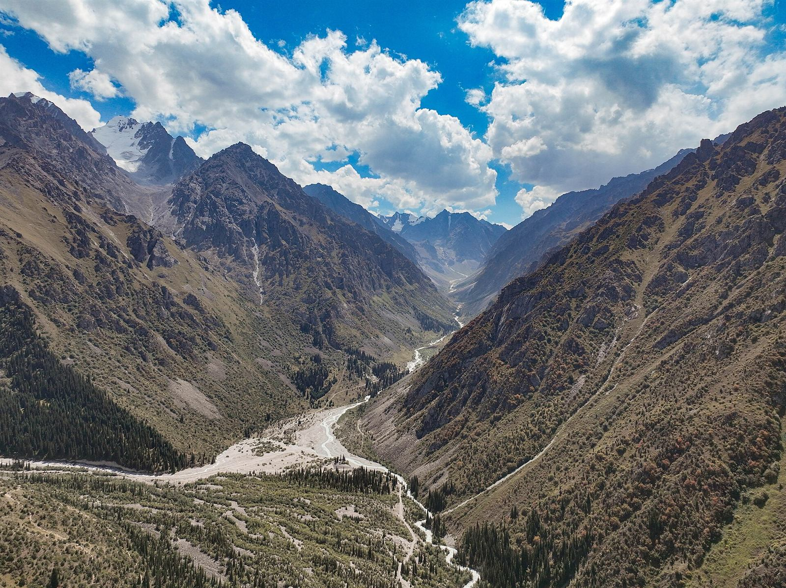
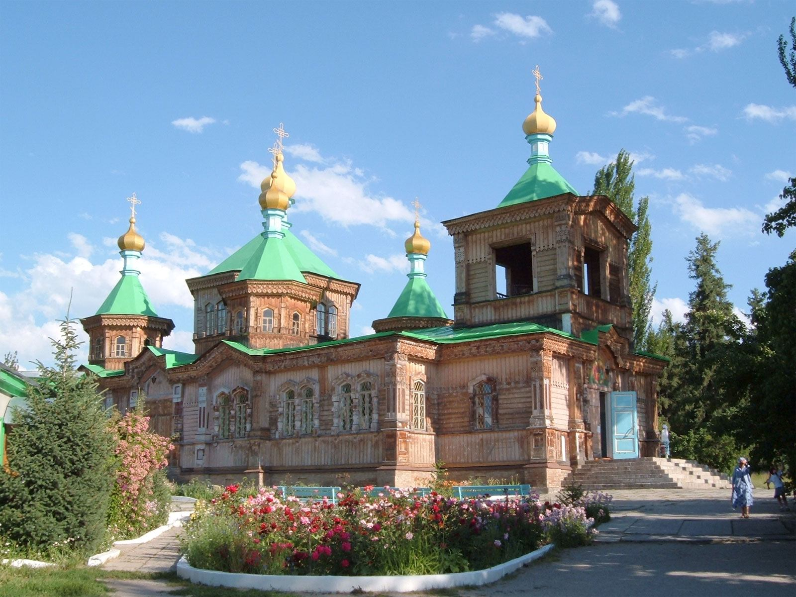
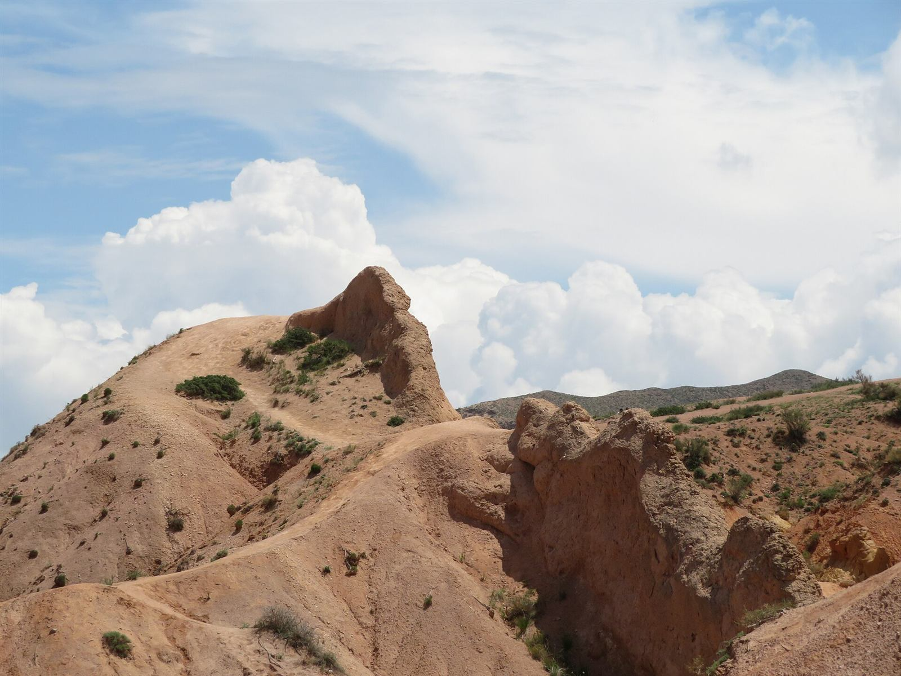
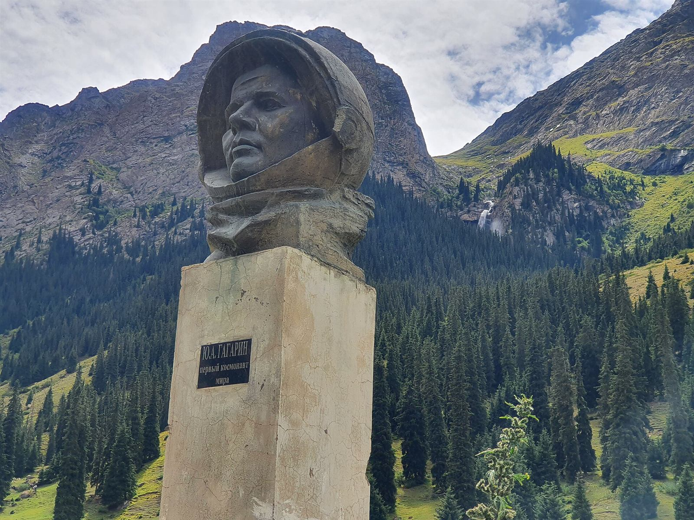
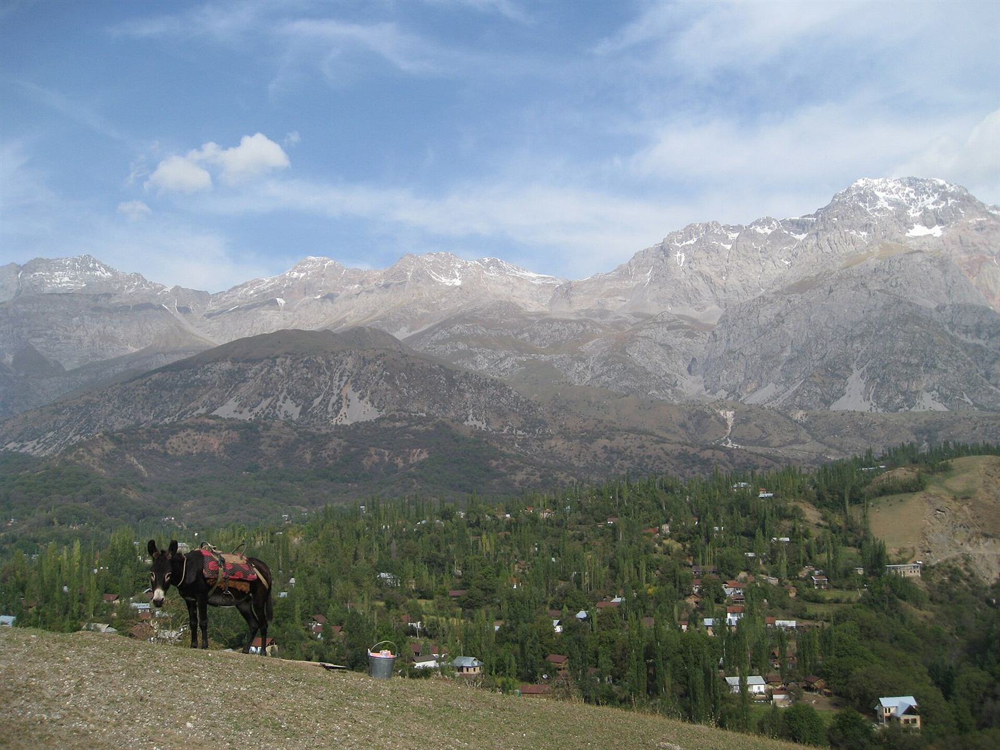
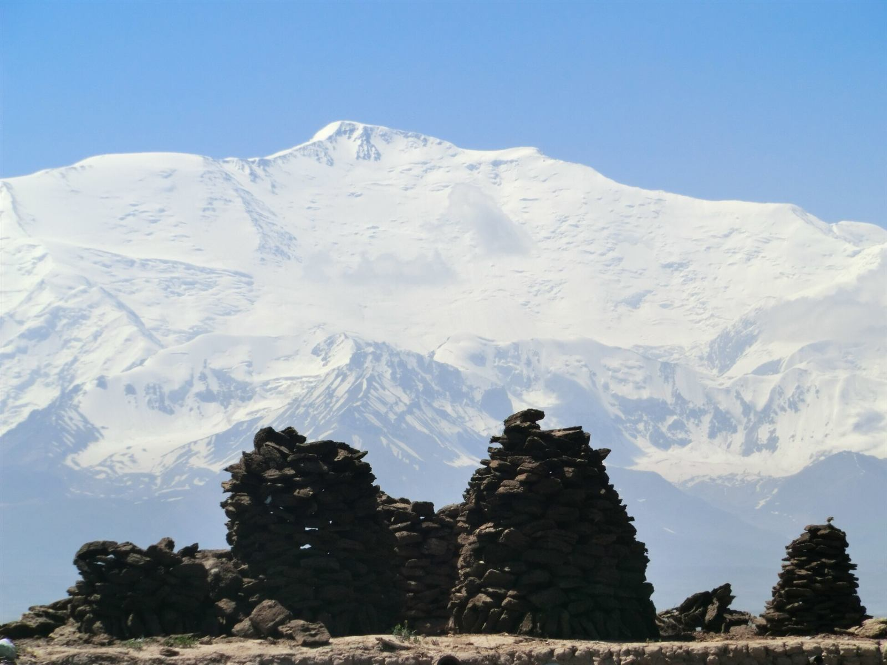

LakeView details
LakeView detailsIssyk-Kul Lake
The "pearl of Kyrgyzstan": about 180 km long, at 1,600 m altitude. Swim in summer, visit Cholpon-Ata's petroglyphs, and enjoy mountain views from every beach.
Seven regions, endless landscapes. Filter by what you love most.
LakeView detailsThe "pearl of Kyrgyzstan": about 180 km long, at 1,600 m altitude. Swim in summer, visit Cholpon-Ata's petroglyphs, and enjoy mountain views from every beach.
 Lake · NomadsView details
Lake · NomadsView detailsA remote alpine lake at around 3,000 m surrounded by summer pastures. Stay in yurt camps run by herder families and go horse riding.
 Alpine lakeView details
Alpine lakeView detailsA turquoise glacial lake at 3,532 m in the Teskey Ala-Too range. It can only be reached on foot, on a classic 2–3 day trek from Karakol.
 Hidden gemView details
Hidden gemView detailsAn emerald lake squeezed between sheer rock walls near the Chinese border. About four hours by car from Naryn, then on foot or on horseback.

National parkView detailsA gorge 40 km south of Bishkek with trails to waterfalls and the Ak-Sai glacier. Easy access for a day hike.

Adventure hubView detailsBase for treks to Ala-Kul lake and Altyn-Arashan hot springs. See the wooden Holy Trinity Cathedral and the Dungan Mosque, and ski in winter.
 Hot springsView details
Hot springsView detailsA green alpine valley above Karakol with a rushing river, spruce forests and natural hot springs. Soak in the warm pools after a day of hiking.
 Red rocksView details
Red rocksView details"Seven Bulls": striking red sandstone cliffs and the Broken Heart rock, with a lush valley perfect for hiking and picnics.

CanyonView detailsColourful wind-carved rock formations on the southern shore of Issyk-Kul that look like castles and dragons.

WaterfallsView detailsA forested gorge on the south shore of Issyk-Kul with tall waterfalls and a monument to Yuri Gagarin, the first person in space, who rested here.
 Silk RoadView details
Silk RoadView detailsAn 11th-century minaret from the ancient city of Balasagun, surrounded by stone balbal grave markers. Easy half-day trip from Bishkek.
 Silk RoadView details
Silk RoadView detailsA 15th-century stone caravanserai hidden in a valley at 3,500 m, on the old route towards China. Stay overnight in nearby yurts.
 UNESCOView details
UNESCOView detailsOne of the oldest cities in Central Asia. Climb the sacred Sulaiman-Too mountain and explore the huge Jayma Bazaar.
 CapitalView details
CapitalView detailsGreen, leafy capital with Soviet-era boulevards, Ala-Too Square, Osh Bazaar and a lively café scene. Most trips start here.

ForestView detailsHome to one of the largest natural walnut forests in the world, with waterfalls and a welcoming village homestay scene.
 Biosphere reserveView details
Biosphere reserveView detailsA deep-blue lake within a UNESCO biosphere reserve, surrounded by spruce and fruit forests. Quiet and off the beaten path.

ExpeditionView detailsAt 7,134 m it is one of the most accessible 7,000-metre peaks in the world. The base camp meadows are a great trek even for non-climbers.
No destinations match your search. Try another word.
Tap a pin to preview a place, then open its details. Use the + and − buttons to zoom.
Tell us your interests and we'll suggest a route that fits your time.
Get a personalised route